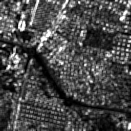

TextureExample.cxx¶

Result of applying the ScalarImageToTexturesFilter to an image (contrast).
Example usage:
./TextureExample Input/ADS40RoiSmall.png Output/TextureOutput.tif Output/pretty_TextureOutput.png 2 1 1
Example source code (TextureExample.cxx):
#include "itkMacro.h"
#include "otbImage.h"
#include "otbImageFileReader.h"
#include "otbImageFileWriter.h"
// Pretty RGB output
#include "otbVectorImage.h"
#include "otbImageToVectorImageCastFilter.h"
#include "otbVectorRescaleIntensityImageFilter.h"
#include "otbScalarImageToTexturesFilter.h"
int main(int argc, char* argv[])
{
// Parse command line parameters
if (argc != 7)
{
std::cerr << "Usage: " << argv[0] << " <inputImage> ";
std::cerr << " <outputImage> <outputRescaled> ";
std::cerr << " <radius> <xOffset> <yOffset> ";
std::cerr << std::endl;
return EXIT_FAILURE;
}
const char* infname = argv[1];
const char* outfname = argv[2];
const char* outprettyfname = argv[3];
const unsigned int radius = static_cast<unsigned int>(atoi(argv[4]));
const unsigned int xOffset = static_cast<unsigned int>(atoi(argv[5]));
const unsigned int yOffset = static_cast<unsigned int>(atoi(argv[6]));
typedef double PixelType;
const int Dimension = 2;
typedef otb::Image<PixelType, Dimension> ImageType;
// After defining the types for the pixels and the images used in the
// example, we define the types for the textures filter. It is
// templated by the input and output image types.
typedef otb::ScalarImageToTexturesFilter<ImageType, ImageType> TexturesFilterType;
typedef otb::ImageFileReader<ImageType> ReaderType;
typedef otb::ImageFileWriter<ImageType> WriterType;
ReaderType::Pointer reader = ReaderType::New();
WriterType::Pointer writer = WriterType::New();
reader->SetFileName(infname);
writer->SetFileName(outfname);
// We can now instantiate the filters.
TexturesFilterType::Pointer texturesFilter = TexturesFilterType::New();
// The texture filters takes at least 2 parameters: the radius of the
// neighborhood on which the texture will be computed and the offset
// used. Texture features are bivariate statistics, that is, they are
// computed using pair of pixels. Each texture feature is defined for
// an offset defining the pixel pair.
//
// The radius parameter can be passed to the filter as a scalar
// parameter if the neighborhood is square, or as \code{SizeType} in
// any case.
//
// The offset is always an array of N values, where N is the number of
// dimensions of the image.
typedef ImageType::SizeType SizeType;
SizeType sradius;
sradius.Fill(radius);
texturesFilter->SetRadius(sradius);
typedef ImageType::OffsetType OffsetType;
OffsetType offset;
offset[0] = xOffset;
offset[1] = yOffset;
texturesFilter->SetOffset(offset);
// The textures filter will automatically derive the optimal
// bin size for co-occurences histogram, but they need to know
// the input image minimum and maximum. These values can be set
// like this :
texturesFilter->SetInputImageMinimum(0);
texturesFilter->SetInputImageMaximum(255);
// To tune co-occurence histogram resolution, you can use
// the SetNumberOfBinsPerAxis() method.
// We can now plug the pipeline.
texturesFilter->SetInput(reader->GetOutput());
writer->SetInput(texturesFilter->GetInertiaOutput());
writer->Update();
// Pretty image creation for printing
typedef otb::VectorImage<double, 2> VectorImageType;
typedef otb::VectorImage<unsigned char, 2> PrettyVectorImageType;
typedef otb::ImageFileWriter<PrettyVectorImageType> WriterPrettyOutputType;
typedef otb::ImageToVectorImageCastFilter<ImageType, VectorImageType> VectorCastFilterType;
typedef otb::VectorRescaleIntensityImageFilter<VectorImageType, PrettyVectorImageType> RescalerOutputType;
RescalerOutputType::Pointer outputRescaler = RescalerOutputType::New();
WriterPrettyOutputType::Pointer prettyOutputWriter = WriterPrettyOutputType::New();
VectorCastFilterType::Pointer vectorCastFilter = VectorCastFilterType::New();
vectorCastFilter->SetInput(texturesFilter->GetInertiaOutput());
outputRescaler->SetInput(vectorCastFilter->GetOutput());
PrettyVectorImageType::PixelType min(1), max(1);
min.Fill(0);
max.Fill(255);
outputRescaler->SetOutputMinimum(min);
outputRescaler->SetOutputMaximum(max);
prettyOutputWriter->SetFileName(outprettyfname);
prettyOutputWriter->SetInput(outputRescaler->GetOutput());
prettyOutputWriter->Update();
}